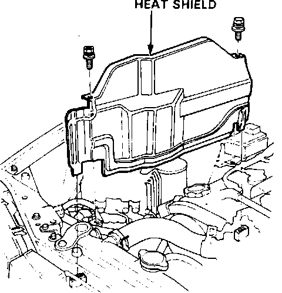
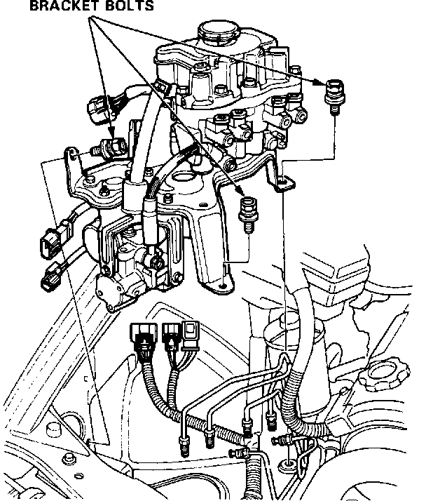
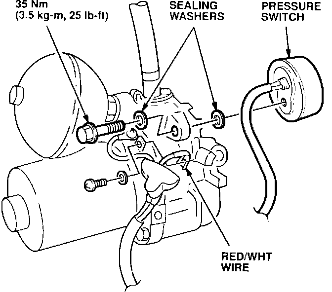
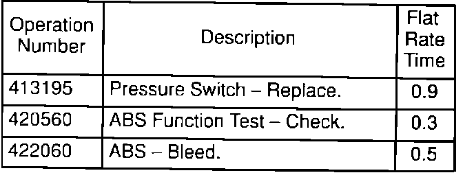

ABS Indicator Light Comes On - Code 1-8
September 8, 1992BULLETIN NO.
92-023
YEAR
1992
MODEL
VIGOR
VIN APPLICATION
ALL
ABS Problem Code 1-8
SYMPTOM
The ABS indicator light comes on and, when the service check connector is jumped, the indicator light displays problem code 1-8.
PROBABLE CAUSE
The ABS pump can restore system pressure very quickly. The actual pump run-time is so short that the ABS control unit interprets it to mean that the nitrogen in the accumulator has been depleted.
CORRECTIVE ACTION
Install a new pressure switch that turns the pump on at a slightly lower pressure and off at a slightly higher pressure.

1. Relieve the accumulator/line pressure, and drain the brake fluid from the modulator, as described on page 19-71 of the service manual.
2. Remove the heat shield.

3. Remove the cruise control actuator mounting bolts, disconnect its connectors, and lay the actuator on the engine.
4. Disconnect the brake lines from the modulator.
5. Remove the three modulator bracket mounting bolts, then remove the modulator, power unit, and bracket as an assembly. Disconnect the modulator connectors during removal.

6. Remove the rubber cap covering the ABS pump wires, and disconnect the RED/WHT wire.
7. Remove the original pressure switch, and install the new switch using new sealing washers (see PARTS INFORMATION).
8. Reconnect the RED/WHT wire to the pump, and reinstall the rubber cap.
9. Reinstall the modulator/power unit assembly, brake lines, cruise control actuator, and heat shield.
10. Refill the modulator reservoir, and bleed the ABS system, as described on page 19-77 of the service manual.
11. Check the ABS by performing the Function Test with the ALB Checker.
PARTS INFORMATION
Pressure switch:
P/N 57390-SPO-305
Sealing washer
(four required):
P/N 90545-300-000
WARRANTY CLAIM INFORMATION
In warranty:
The normal warranty applies.
Out of warranty:
Any repair performed after warranty expiration may be eligible for goodwill consideration by the District Service Manager. You must request consideration, and get the DSM's decision, before starting work.

Operation Description
Failed P/N: 57390-SPO-305
Defect code: 074
Contention code: B06